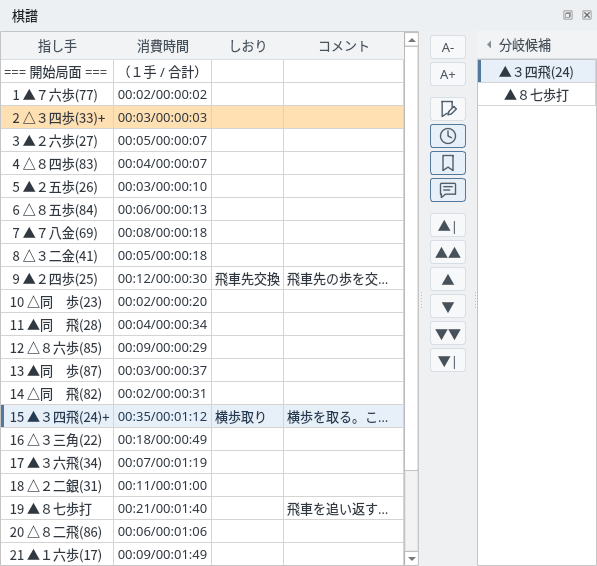
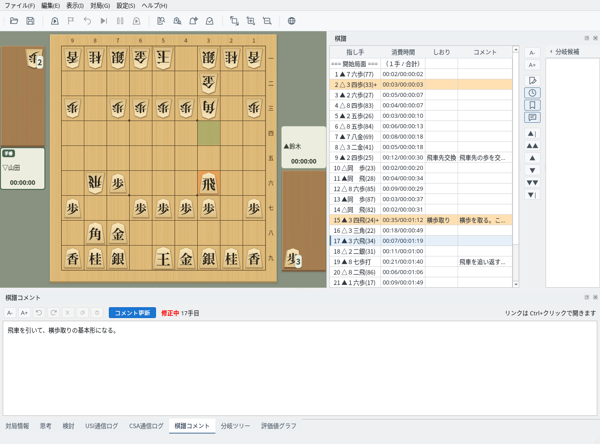
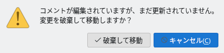
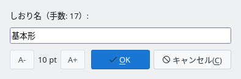
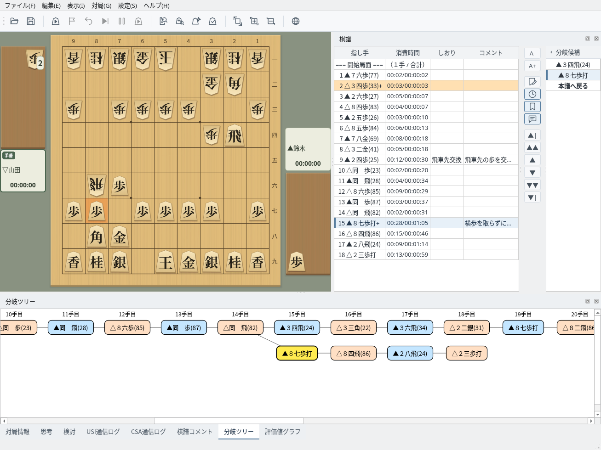

棋譜欄の表示・コメント・しおり・分岐棋譜の操作
指し手・消費時間・しおり・コメントを一覧で表示します
棋譜欄には、開始局面から順に指し手・消費時間（1手／合計）・しおり・コメントが並びます。手を選ぶと、その局面が盤面に表示され、棋譜コメントや分岐ツリーも同じ手に切り替わります。手は行のクリック、↑↓キー、右側のボタンで選べます。
分岐のある手は背景がオレンジ色になり、指し手の末尾に「+」が付きます。右端の「分岐候補」には、選んでいる手に別の指し手があるときにその候補が並びます（「◂ 分岐候補」で折りたためます）。
棋譜と盤の座標の表記は「設定」→「棋譜と盤の座標表記」で、日本語表記（▲７六歩）と英語表記（▲P-7f）を切り替えられます。最初は表示言語に合わせた表記です（日本語・中国語は日本語表記、英語は英語表記）。詳しくは多言語対応のガイドを参照してください。

棋譜欄：消費時間・しおり・コメントの列と、15手目の分岐候補
選んでいる手にコメントを書きます
画面下部の「棋譜コメント」タブに、選んでいる手のコメントが表示されます。書き換えると「修正中」と表示されるので、「コメント更新」（Ctrl+Enter）で棋譜に反映します。反映したコメントは棋譜欄のコメント列にも表示されます。
コメント中のURLはリンクになり、Ctrl+クリックで開きます。左側のボタンで文字の大きさの変更、元に戻す・やり直す、切り取り・コピー・貼り付けができます。コメントは KIF・KI2・CSA・JKF 形式で保存されます。

棋譜コメント：17手目のコメントを書き換えたところ（修正中）
「コメント更新」を押さずに別の手へ移ろうとすると、確認が表示されます。「破棄して移動」で書き換えを捨てて移動し、「キャンセル」で移動をやめて元の手に戻ります。棋譜欄のクリック・ボタン・分岐候補・分岐ツリーのどの操作でも同じです。

未更新のコメントの確認
目印にしたい手に名前を付けます
手を選んで「しおりを編集」ボタンを押し、しおり名を入力して「OK」を押すと、棋譜欄のしおり列に表示されます。名前を空にして「OK」を押すと、しおりを削除します。
しおりは KIF・KI2 形式で保存され、読み込んだときに表示されます。

しおりを編集
別の変化の手順を切り替えて確認します
分岐のある手を選ぶと、分岐候補に本譜の手と別の手が並びます。候補をクリックするとその手順に切り替わり、棋譜欄も分岐の手順になります。分岐の手順を表示しているときは、候補の最後の「本譜へ戻る」で本譜の同じ手数に戻ります。
「分岐ツリー」タブでは、本譜（いちばん上の行）と分岐の手順を一覧できます。現在の手は黄色で示され、手をクリックするとその局面に移動します。現在の手が画面の外にあるときは、その手が見える位置まで自動でスクロールします。分岐を保存できる形式は棋譜管理のガイドを参照してください。

分岐：15手目で「▲８七歩打」を選び、分岐ツリーを表示したところ